Documentação Projeto EAD@Cel 25/01/2011
Janeiro de 2011
ÍNDICE:
Objetivos do projeto:
Transmissão e recepção de vídeo e áudio em tempo real através de celulares com sistema operacional Android, para fins de ensino a distância e integração com o sistema IVA de vídeo-conferência (mais detalhes desse sistema em http://www.inf.ufrgs.br/prav/projetos_sicremaq.html), mas podendo estender-se para outros fins e integrar-se com outros sistemas.
Sobre esta documentação:
Nesta data (25/01/2011) estamos fechando uma versão com as funcionalidades básicas (envio e recepção de vídeo em tempo real). Ainda não deve ser usada por usuários finais, pois há alguns parâmetros “hard-coded”, a interface está em desenvolvimento, não há uma verificação de parâmetros suportados pelos diferentes aparelhos nem foram realizados testes suficientes e otimizações possíveis. Serve como base para o desenvolvimento de versões que se escolher seguir dependendo do escopo do projeto.
Esta documentação apresenta, inicialmente, um capítulo com conceitos básicos que são necessários para um melhor entendimento do projeto por todas as pessoas envolvidas, sobre:
Em seguida, é documentada, em resumo, a implementação da versão atual do EAD@Cel, dividida em Captura, Codificação, Envio, Recepção, Decodificação e Renderização de áudio/vídeo, fornecendo uma visão geral do código do aplicativo e alguns detalhes e questões de implementação cuja documentação é importante, além de uma explicação da estrutura de diretórios utilizada no projeto e uma breve documentação de alguns arquivos importantes.
Depois, apresentamos um guia para configuração do ambiente de programação.
Ao final, mostramos alguns testes realizados e uma explicação de como fizemos para chegar nos resultados obtidos.
Logo, esta documentação serve para organizar de forma resumida o que foi feito desde o início da implementação do EAD@Cel no Android até a data atual, facilitando o entendimento dele por parte de todos os envolvidos no projeto.
1 CONCEITOS BÁSICOS:
Android é um sistema operacional de código aberto para dispositivos móveis construído sobre uma versão modificada do kernel Linux. Aplicativos para Android são escritos com a linguagem de programação Java e rodam na máquina virtual Dalvik. O desenvolvimento de aplicativos é feito com o kit de desenvolvimento de software para Android (Android SDK). (Nosso guia de instalação) Esse kit fornece diversas ferramentas úteis (como depuradores de código, emuladores e APIs) além de oferecer plataformas que permitem a compilação de aplicativos. O site oficial do android fornece uma boa documentação das APIs e ótimas explicações sobre o ciclo de vida dos aplicativos e sobre as técnicas adequadas de programação. Convém estudar o guia do desenvolvedor aqui: http://developer.android.com/guide/index.html.
Obs: o emulador é, em geral, muito menos eficiente que um dispositivo móvel real, principalmente em se tratando de opengl, portanto não eh bom para se testar o desempenho de um aplicativo.
Como Android roda Linux, também é possível escrever e compilar código em C/C++ para android. Para isso, é fornecido o NDK, que é uma série de ferramentas que, ao serem utilizadas em conjunto com o SDK para Android, permitem que o desenvolvedor escreva e compile partes do seu aplicativo em código nativo, ou seja, utilizando linguagens nativas como C ou C++. A interação entre o código Java e o código nativo é feita com a utilização da JNI (Java Native Interface), que é uma interface que permite que um código que está rodando em uma máquina virtual chame e seja chamado por um código nativo. Convém estudar a JNI neste bom livro: http://java.sun.com/docs/books/jni/ e ler a documentação do NDK na pasta DOCS do NDK.
Outro aspecto de extrema importância é o conhecimento da problemática das diferentes versões do android. No EAD@Cel tentamos manter compatibilidade com o maior numero de versões possíveis, visto que o processo de atualização do android é bastante lento e burocrático, como mostra o gráfico abaixo, de Janeiro de 2011, mostrando a percentagem de usuários atuais de cada versão do android.
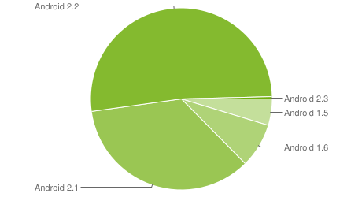
Convém pesquisar em livros e artigos para estudar os conceitos básicos da problemática da comunicação por vídeo. Questões como vídeo-conferência, codificação/decodificação de vídeo, qualidade de vídeo, vídeo em dispositivos móveis, etc.
1.3 Programação de aplicativos de vídeo no android:
Neste capítulo serão descritos os 3 métodos mais comuns de se desenvolver aplicativos de vídeo para o Android, apenas para fins de conhecimento, visto que nenhum deles foi utilizado no EAD@Cel por motivos descritos neste capítulo.
1.3.1) Método 1: as APIs padrão para programação multimídia no Android são as classes MediaPlayer e MediaRecorder.
1.3.1.1) Classe MediaPlayer: Para decodificar e exibir vídeo/áudio, a única API existente fornecida pelo Android é a classe MediaPlayer. (http://developer.android.com/reference/android/media/MediaPlayer.html). Seus pontos fortes são a utilização do hardware para decodificar e a facilidade de uso. No entanto, ela não serve para aplicações de comunicação por vídeo em tempo real por vários motivos, entre eles:
Devido a essas limitações, nós descartamos a utilização da classe MediaPlayer.
1.3.1.2) Classe MediaRecorder: Para codificar e enviar áudio/vídeo: mesmo problema, a única classe do android para codificação de vídeo em hardware (MediaRecorder) é pouco flexível, pois não permite o envio de um streaming em tempo real, visto que apenas salva o resultado da codificação em um arquivo local (teríamos, portanto, que ir gerando esse arquivo e ir lendo ele ao mesmo tempo, o que seria pouco intuitivo e provavelmente pouco eficiente).
1.3.2) Método 2: Na versão 2.2 do Android surgiu o suporte a flash, e a adobe possui uma API para vídeo-conferência em flash. No entanto, é de baixa flexibilidade pois todo o controle da vídeo-conferência (protocolo utilizado, codificação, exibição, etc) é controlado internamente pela API e é inacessível ao programador. Dessa forma, não é possível integrá-la ao IVA. Além disso, a API da adobe não dá suporte a versões anteriores do android, e a qualidade da API ainda é duvidosa. Por esses motivos decidimos não utilizá-la.
1.3.3) Método 3: Na versão 2.3 do Android, surgiram outras facilidades para o desenvolvimento de aplicativos de vídeo-conferência. No entanto, pelo mesmo motivo (não se sabe quanto tempo vai demorar para que a 2.3 se estabeleça como dominante no mercado e queremos compatibilidade com versões anteriores) decidimos não utilizar essas facilidades.
Logo, esta documentação assume a compatibilidade do aplicativo EAD@Cel considerando a utilização de versões do android a partir da 1.5 em diante.
A alternativa que utilizamos, melhor descrita no capítulo de implementação, foi receber e decodificar o áudio/vídeo com as bibliotecas do IVA, que por sua vez utilizam as bibliotecas do FFMPEG. Os resultados foram ótimos: apesar de ser em software, a decodificação se mostrou bastante eficiente e a recepção com baixo delay. No entanto, a codificação é um pouco mais pesada que a decodificação. Mesmo assim obtivemos bons resultados. Logo, descartamos o uso dos 3 métodos descritos neste capítulo e utilizamos as bibliotecas do IVA.
2 IMPLEMENTAÇÃO
2.1 Questões de implementação:
Caso as APIs padrão do Android (MediaPlayer e MediaRecorder) não tivessem as limitações que foram apresentadas no capítulo anterior, com certeza seriam a melhor opção, e a implementação ficaria desta forma:
Para poder integrar o EAD@Cel ao IVA, o IVA precisaria garantir suporte aos codecs utilizados no EAD@Cel, que seriam os codecs suportados por default pelo hardware de aparelhos Android. Como o IVA usa FFMPEG, isso não seria difícil. Essa seria a implementação mais simples, intuitiva, eficiente e rápida de ser desenvolvida. Infelizmente, como já foi explicado, não é possível.
A solução que utilizamos foi a seguinte:
Nessa solução escolhemos utilizar os codecs já confirmadamente suportados pelo IVA, evitando ter de realizar alguma adaptação ao IVA nesse sentido. Mais detalhes sobre essa solução, que é a que utilizamos, no capítulo seguinte.
É importante citar que ainda haveria uma terceira alternativa de implementação. Como o Android é de código aberto, essa alternativa seria copiar as libraries nativas (C/C++) internas (privadas) ao sistema operacional que interagem com as classes java MediaPlayer e MediaRecorder e com o hardware dos aparelhos e colá-las no nosso projeto EAD@Cel. Em seguida, compilaríamos essas libraries dentro do nosso projeto. Desse modo, teríamos acesso aos quadros codificados/decodificados pelo hardware e, desse modo, poderíamos utilizar a lib NET do IVA para realizar a transmissão/recepção desses quadros. Assim, a implementação ficaria desta forma:
Contudo, como as bibliotecas nativas interagem com o resto do Android, e o sistema operacional muda muito a cada nova versão (e muda a cada modelo de aparelho também, mesmo dentro de uma mesma versão), haveria grande probabilidade do aplicativo deixar de funcionar em diferentes versões do Android ou funcionar apenas no modelo de aparelho cujo código utilizamos, e a manutenção para fazê-lo voltar a funcionar ou para que funcione em múltiplos aparelhos com certeza seria inviável em termos de complexidade. Por esses motivos, tal uso das bibliotecas privadas do android não deve ser feito, segundo os desenvolvedores do Android. Além disso, com essa solução estaríamos limitados a utilizar os codecs suportados por default pelos aparelhos android. Por todos esses motivos, descartamos essa alternativa.
2.2 Documentação da implementação do EAD@Cel:
Pode-se dividir nas seguintes partes:
Captura, codificação, transmissão, recepção, decodificação e renderização de vídeo/áudio:
2.2.1) Captura:
2.2.1.1) Captura de vídeo: desenvolvemos uma classe em Java chamada Preview (que está no arquivo src/Camera.java). A classe utiliza uma API do Android chamada “Camera”. Com o auxilio dessa API, nossa classe “Preview” seta os parâmetros de captura desejados (resolução, quadros/s, etc) e envia cada frame capturado no formato YUV420SP (também conhecido como NV21, que é o único formato de captura suportado por todos os aparelhos android) para o C++, que irá fazer a codificação dos frames com as libs do IVA + ffmpeg.
Um detalhe que convém citar é a utilização de “Java reflection” para que se possa utilizar a função setPreviewCallbackWithBuffer em versões do android anteriores a 2.2, quase dobrando a taxa de frames, visto que essa função evita que o GC (garbage collector do android) interrompa o programa a cada frame.
2.2.1.2) Captura de áudio: desenvolvemos uma classe em Java chamada Mic (que está no arquivo Mic.java). Ela utiliza a API do Android chamada AudioRecord, e faz a captura do audio do microfone. Cada frame capturado é enviado ao C++ no formato RAW (PCM), aonde será feita a codificação com as libs do iva+ffmpeg.
2.2.2) Codificação: A codificação do áudio e do vídeo é feita em software com as libs do iva que utilizam o ffmpeg.
2.2.3) Transmissão: a transmissão é feita com as libs do iva.
2.2.4) Recepção: feita com as libs do iva.
2.2.5) Decodificação: em software, feita com as libs do iva que utilizam o ffmpeg;
2.2.6) Renderização: esta talvez foi a parte mais trabalhosa do aplicativo visto que, em versões anteriores a 2.3 do android, não há como renderizar áudio nem vídeo diretamente do C/C++. Ou seja, é preciso utilizar alguma API Java para realizar a renderização, mas os nossos frames decodifcados estão no C++. Dessa forma, o método mais eficiente que encontramos para renderizar os frames de áudio e de vídeo foi o seguinte:
2.2.6.1) Renderização do vídeo: utilizamos OpenGL em C++, desenhando um retângulo com as dimensões desejadas e aplicando o frame de vídeo decodificado como textura RGB ao retângulo. (convém estudar openGL em C++ para android, e verificar o sample fornecido na NDK no diretório samples/san-angeles).
É importante citar que criamos um arquivo src/GLSurfaceView_FFMPEG.java que extende a classe SurfaceView do Android e possibilita que chamemos a função SwapBuffers do OpenGL do Java a partir do C++, evitando, assim, ter de retornar ao onDrawFrame do Java com um “return” no C++, o que torna o código muito mais simples, legível e de mais fácil manutenção.
Outro detalhe importante, caso o frame decodificado esteja numa resolução, e se queira renderizá-lo em outra, verificamos que realizando esse redimensionamento com o ffmpeg é mais lento que com o opengl. Ainda assim, caso a versão do OpenGL do aparelho utilizado seja a 1.0, o redimensionamento é muito lento pois é feito em software. Caso seja 1.1 em diante, pode-se realizá-lo sem problemas pois é em hardware e é bem eficiente.
Outro detalhe: algumas versões do OpenGL suportam apenas texturas sobre retângulos de resolução cujas dimensões são potência de 2. É pra isso que serve nossa função “apply_first_texture”, que gera um retângulo com dimensões de potência de dois imediatamente maiores que as que irão ser utilizadas. Em seguida, a cada frame, aplica-se a textura com qualquer dimensão sobre parte desse retângulo.
Também realizamos cálculos considerando a resolução máxima da tela e a orientação do celular para que a exibição do vídeo esteja sempre centralizada na tela, independentemente da resolução e da orientação.
2.2.6.2) Renderização do áudio: criamos o arquivo src/AudioThread.java que utiliza a API do Android chamada AudioTrack. Essa API toca frames de audio que são entregues a ela no formato RAW (PCM). Para isso ajustamos corretamente os parâmetros da AudioTrack. Para enviarmos os frames de áudio do C++ para o Java, primeiramente tentamos chamar uma função Java a partir do C++ utilizando a JNI, passando como parâmetro o frame, que seria a solução mais simples. No entanto, esta solução ativa o Garbage collector a cada frame, o que causa uma enorme queda no desempenho, logo essa alternativa foi descartada. A alternativa que implementamos para evitar o GC foi utilizar uma técnica da JNI um pouco mais trabalhosa. Em resumo, essa técnica consiste na criação de um array em Java que representa um frame e de um array em C++ que também representa um frame. Em seguida, com chamadas a algumas funções da JNI, associamos os dois arrays para a mesma posição da memoria para que eles sejam tratados como se fossem um só. Assim, cada vez que se atualiza o array do C++ com os dados do novo frame decodificado, essa atualização é automaticamente propagada ao array do java, sem que seja feita nenhuma cópia e nenhuma alocação de memoria adicional, resultando na solução mais eficiente que encontramos para renderizar o áudio.
2.3 Diagramas de sequência
Para melhor visualizar as relações entre as classes e as chamadas nativas, apresentamos 2 diagramas de sequência numa notação semi-formal.
2.3.1) Diagrama do processo de recebimento de vídeo e áudio:
O diagrama abaixo ajuda a compreender o processo de recebimento de vídeo e áudio, mostrando as principais classes envolvidas e as funções contidas no arquivo eadcel.cpp. O retângulo vermelho representa o estado, definido no código através de 3 laços em série, onde o aplicativo permanece recebendo áudio e/ou vídeo.
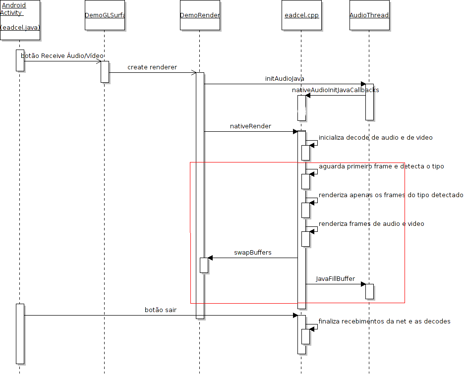
2.3.2) Diagrama do processo de envio de vídeo:
Abaixo o retângulo vermelho mostra o estado em que os frames capturados pela classe Preview são continuamente transferidos para a parte nativa, onde ocorre a codificação e o envio pelas threads do codificador e do emissor, chamados respectivamente no código como video_enc e como netSendVideo.
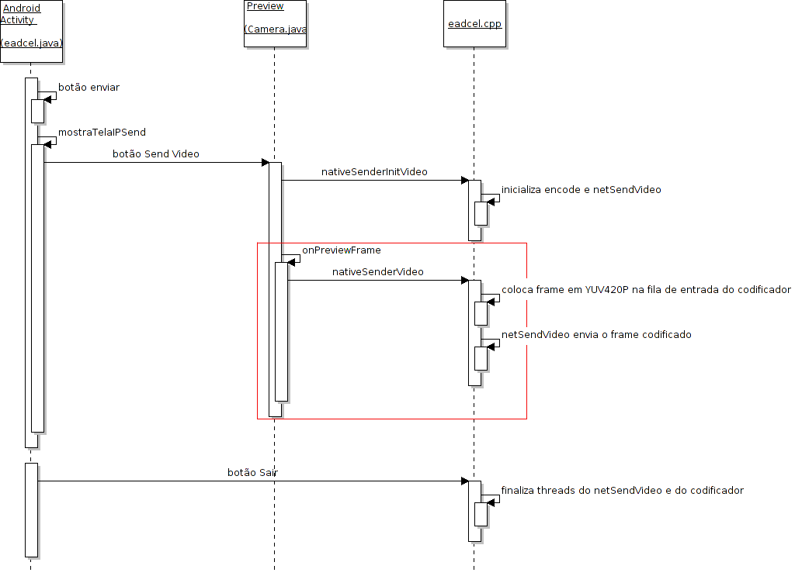
2.3.3) Diagrama do processo de envio de áudio:
Semelhante ao que ocorre no envio do vídeo, o diagrama a seguir mostra a classe Mic, que é uma thread que permanece no estado running utilizando o objeto AudioRecord (omitido abaixo) para capturar os bytes do frame em PCM. Logo a seguir o frame é enviado através da função nativeSenderAudio para que as threads nativas definidas no eadcel.cpp façam a codificação e o envio.
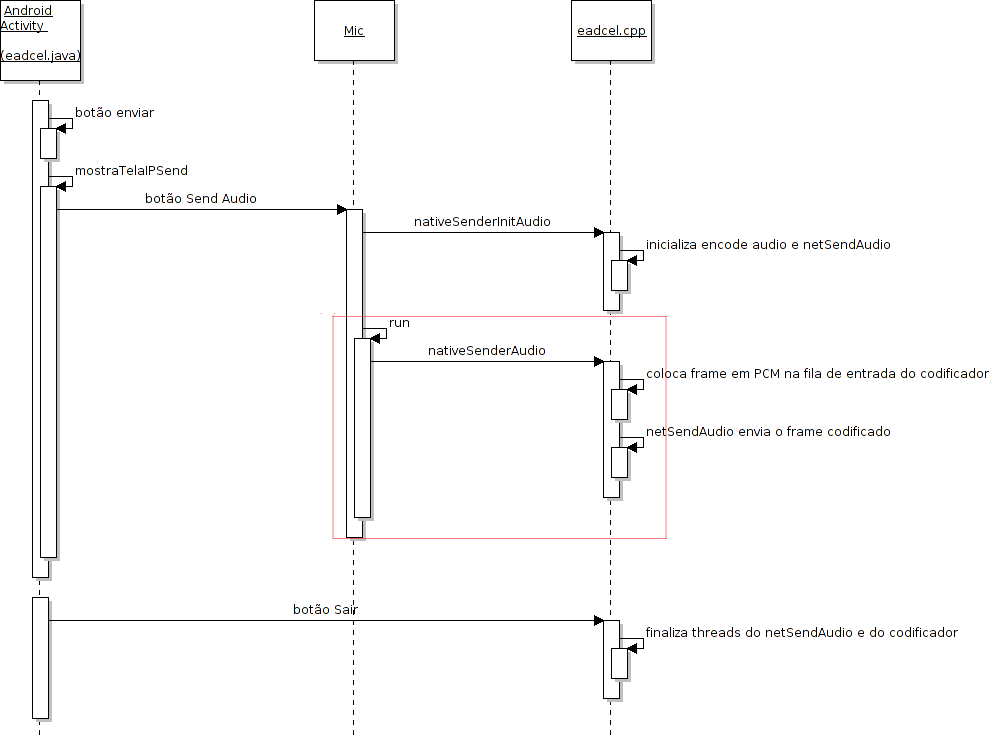
Os diagramas de envio foram mostrados separadamente para facilitar a legibilidade de cada processo. Na opção de enviar vídeo juntamente com áudio, os processos são disparados um após o outro. Primeiro o envio de áudio e depois o envio de vídeo.
2.4 Estrutura de diretórios e arquivos importantes:
Graficamente o projeto se estrutura da seguinte forma:
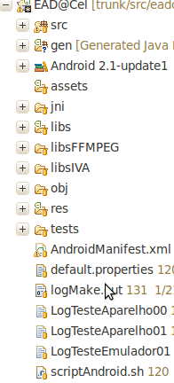
Graficamente, a pasta src:
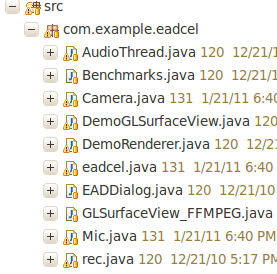
Graficamente, a pasta “jni”:
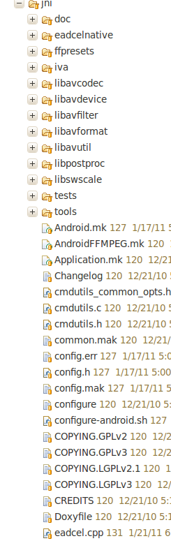
trocar
#define restrict restrict
por
#define restrict __restrict
e trocar
#define HAVE_LOG2 1
#define HAVE_LOG2F 1
por
#define HAVE_LOG2 0
#define HAVE_LOG2F 0
2.5 Diagramas de classes java:
2.5.1) Classes mais importantes referentes aos arquivos eadcel.java, Camera.java, DemoGLSurfaceView.java, DemoRenderer.java e GLSurfaceView_FFMPEG.java:
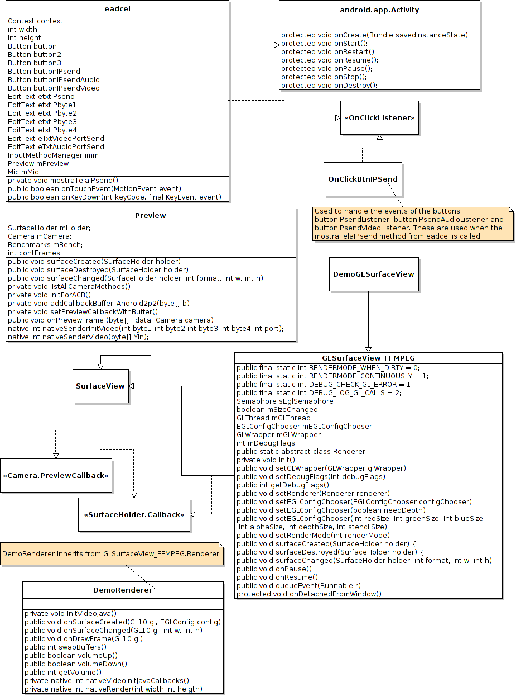
2.5.2) Classe do arquivo AudioThread.java:
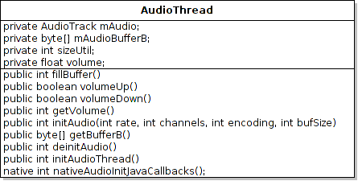
2.5.3) Classes do arquivo Mic.java:
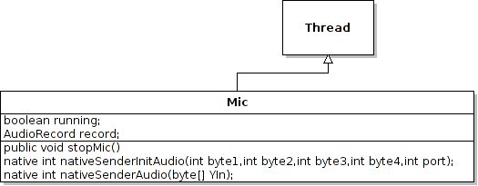
3 CONFIGURAÇÃO DO AMBIENTE QUE UTILIZAMOS
3.1 Configuração de rede:
Foi usado um roteador wireless D-Link DIR-615 com ip 143.54.132.96. Cada celular ligado ao roteador recebeu um ip estático interno diferente. Por exemplo, um celular 192.168.0.120 e o outro 192.168.0.123. Para receber a transmissão no celular 120 setamos o port-forwarding conforme a figura:
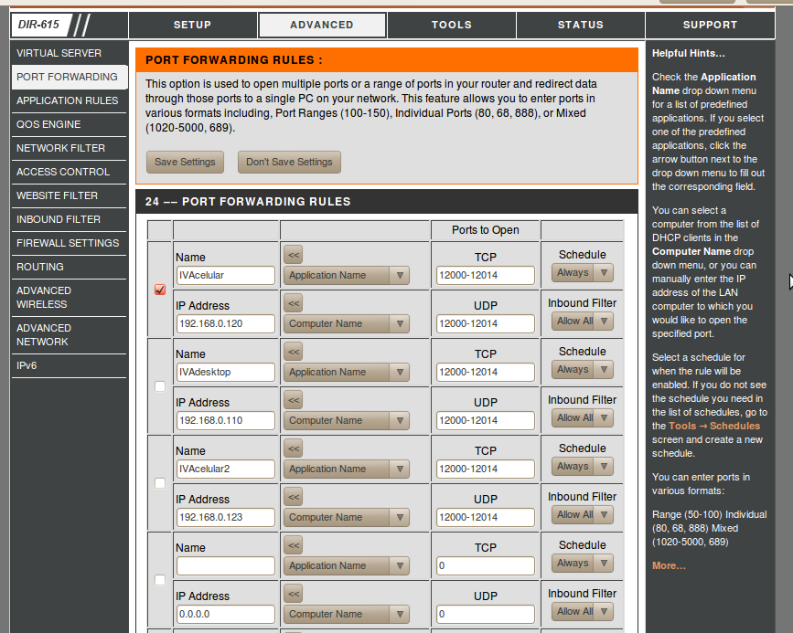
Obs: pode-se utilizar outro roteador ou outra configuração de rede.
3.2 Instalação e configuração das ferramentas:
Instalar ferramentas necessárias para o desenvolvimento no Android seguindo o guia de instalação em http://developer.android.com/sdk/installing.html
Recomenda-se usar linux pois a NDK é muito mais simples de ser utilizada no linux. No Windows teria que se utilizar cygwin.
3.2.1) Instalar Eclipse: recomendado pois o ADT plugin só funciona no eclipse.
3.2.2) Instalar a SDK: é o kit de desenvolvimento para android. Fornece as APIs para o desenvolvimento de aplicativos para Android em Java.
3.2.3) Instalar o ADT plugin: estende as capacidades do eclipse com ferramentas específicas para o desenvolvimento de aplicativos no android (por exemplo, setup facilitado de novos projetos, debug, desenvolvimento gráfico de interfaces, etc).
3.2.4) Instalar a JDK 5 ou 6;
3.2.5) Instalar todas as plataformas e componentes da SDK;
3.2.6) Instalar a NDK: Não estamos utilizando a NDK oficial do android, pois o suporte dela à STL (Standard Template Library) e a excessões é ruim. A ndk que estamos usando é 100% compatível. Este é o link: http://smartctl.net/data/android-ndk-r4-windows-crystax-1.zip
Importante: Caso seja necessário recompilar algum módulo do ffmpeg, utilizar exatamente esta versão do link acima, pois versões mais novas da NDK, incluindo a versão oficial, resultam numa queda de desempenho na codificação dos frames (ainda não sabemos o motivo).
3.3 Processo de compilação:
Foram utilizadas as seguintes bibliotecas (libs) do IVA: thread, common, sockets, queue, net , decode e encode. Essas libs foram compiladas primeiramente para Linux (Ubuntu), através do CMake, e depois pelo compilador da NDK (ndk-build). Utilizamos os seguintes arquivos na compilação do projeto:
3.3.1) Android.mk: define os arquivos fonte e as localizações dos headers de cada módulo a ser compilado pela NDK. Os módulos são os seguintes: eadcel, thread, common, sockets, net, decode, encode, avutil, avcodec.
3.3.2) Application.mk: arquivo auxiliar para a escolha dos módulos a serem compilados no momento. Essa escolha ocorre simplesmente comentando-se as linhas onde estão os módulos que não precisam ser compilados. O exemplo a seguir faz a compilação apenas do módulo eadcel:
#APP_MODULES := thread common sockets queue net decode encode
APP_MODULES := eadcel
#APP_MODULES := avutil avcodec
3.3.3) scriptAndroid.sh: script localizado na raiz do diretório do projeto, utilizado para executar o ndk-build fazendo a compilação dos módulos referentes às libs do IVA (libsIVA) e o módulo contendo a parte nativa (C/C++) do programa eadcel e automatizando algumas tarefas pós-compilação. As libs do FFMPEG não devem ser compiladas com esse script. Para compilar as libs do FFMPEG, simplesmente deve-se escolher os módulos do ffmpeg desejados com o arquivo “Application.mk”, executar ../../android-ndk-r4-crystax/ndk-build na linha de comando e copiar os binários “.so” da pasta libs para a pasta libsFFMPEG.
A seguir uma breve explicação das partes importantes do scriptAndroid.sh:
3.3.3.1) Comando relativo ao ndk-build. Neste caso foi utilizada a ndk-r4-crystax (versão 1):
NDKBUILD="../../android-ndk-r4-crystax/ndk-build"
3.3.3.2) Variáveis relativas às bibliotecas do FFMPEG:
LIBAVCODEC="libsFFMPEG/libavcodec.so"
LIBAVFORMAT="libsFFMPEG/libavformat.so"
LIBAVUTIL="libsFFMPEG/libavutil.so"
LIBSWSCALE="libsFFMPEG/libswscale.so"
3.3.3.3) Diretório onde ficam localizadas todas as bibliotecas nativas compiladas:
ARMEABI="libs/armeabi"
3.3.3.4) Diretório onde as bibliotecas do IVA ficam disponíveis caso a compilação no momento não tenha o objetivo de compilar as libs do IVA, evitando assim que sejam perdidos os binários “.so” da pasta definida em ARMEABI. Isso ocorre conforme a escolha dos módulos no arquivo application.mk, descrito anteriormente:
LIBSIVA="libsIVA"
A seguir as localizações das libs do IVA a serem copiadas pelo scriptAndroid.sh para a pasta ARMEABI:
LIBCOMMON="libsIVA/libcommon.so"
LIBTHREAD="libsIVA/libthread.so"
LIBSOCKETS="libsIVA/libsockets.so"
LIBQUEUE="libsIVA/libqueue.so"
LIBNET="libsIVA/libnet.so"
LIBDECODE="libsIVA/libdecode.so"
LIBENCODE="libsIVA/libencode.so"
3.3.3.5) Ao final do scriptAndroid.sh são feitas verificações sobre qual tipo de compilação foi escolhida. Por exemplo: se achar a libcommon.so no diretório ARMEABI, significa que o application.mk esta definido para compilar as bibliotecas do IVA, gerando um arquivo binário .so novo para cada uma delas. Esses novos arquivos de extensão “so” são então copiados para a pasta LIBSIVA para que nao seja necessário compila-los quando se quiser gerar apenas o arquivo eadcel.so. Caso contrário, se a libcommon.so nao for encontrada no diretório ARMEABI, significa que o application.mk está definido para compilar apenas o eadcel.so. Então, os .so das bibliotecas do iva que estão no diretório LIBSIVA serão copiados para a pasta ARMEABI, evitando assim a sua recompilação.
4 TESTES DE DESEMPENHO
Para medir a taxa de frames de vídeo e de áudio, foi implementada uma função de benchmark, especificada nos arquivos bench.cpp e bench.h que fazem parte do módulo eadcel. Para realizar uma medição é necessário usar as seguintes funções, exemplificadas abaixo:
a) initBenchVar(&videocapt, 30000, "CAPTURA DE VIDEO"): usada para criar uma medição. No caso é usada a variável videocapt, com 30000 ms de intervalo para a coleta das informações. O último parâmetro dá o nome da medição.
b) beginPoint(&videocapt): inicializa a medição no início do trecho do código a ser medido.
c) endPoint(&videocapt): finaliza a medição ao final do trecho de código medido.
A tabela a seguir mostra algumas informações sobre os aparelhos que foram utilizados nos testes:
| Processador | Versão de firmware | Resolução máxima da tela | Versão do OpenGL |
Motorola Milestone A853 | 500MHz | 2.0.1 | 480 X 854 | 1.0 |
Samsung Galaxy GT-I9000B | 1 GHz | 2.1-update1 | 480 X 800 | 1.1 |
Tabela 1 - Aparelhos Utilizados
4.1 Teste 1: Transmitindo com o Samsung e recebendo com o Milestone
A tabela abaixo mostra os testes realizados onde foi utilizado um Motorola Milestone enviando vídeo e áudio em tempo real para um Samsung Galaxy.
Os parâmetros de codificação de vídeo utilizados foram:
Os parâmetros de codificação de áudio utilizados foram:
As informações são calculadas a cada 30 segundos, significando que cada amostra dos resultados acontece nesse intervalo. Os dados variam um pouco a cada amostra, dependendo do tamanho dos frames de vídeo e de áudio, mas ficam em torno dos valores apresentados:
Aparelho | Tipo de medição | Tempo total no trecho | Numero de medições | Frames/s | Tempo máximo | Tempo médio |
Motorola Milestone | CAPTURA DE VIDEO | 525.25ms (2% do intervalo) | 452 | 15 | 3.39ms | 1.16ms |
Motorola Milestone | CAPTURA DE ÁUDIO | 41.78ms | 575 | 19 | 0.98ms | 0.07ms |
Samsung Galaxy | RENDERIZAÇÃO DE VIDEO | 1228.83ms (4% do intervalo) | 426 | 14 | 21.97ms | 2.88ms |
Samsung Galaxy | RENDERIZAÇÃO DE ÁUDIO | 10573.40ms (35% do intervalo) | 539 | 18 | 99.35ms | 19.62ms |
Tabela 2 - Teste 1: Motorola Milestone enviando para Samsung Galaxy
4.2 Teste 2: Transmitindo com o Milestone e recebendo com o Samsung
A próxima tabela utiliza os mesmos parâmetros da tabela Teste 1, porém agora com o Samsung Galaxy enviando para o Motorola Milestone:
Aparelho | Tipo de medição | Tempo total no trecho | Numero de medições | Frames/s | Tempo máximo | Tempo médio |
Samsung Galaxy | CAPTURA DE VIDEO | 326.23ms (1% do intervalo) | 451 | 15 | 1.58ms | 0.72ms |
Samsung Galaxy | CAPTURA DE ÁUDIO | 15.38ms | 576 | 19 | 0.30ms | 0.03ms |
Motorola Milestone | RENDERIZAÇÃO DE VIDEO | 7149.21ms (24% do intervalo) | 446 | 15 | 43.67ms | 16.03ms |
Motorola Milestone | RENDERIZAÇÃO DE ÁUDIO | 19097.86ms (64% do intervalo) | 572 | 19 | 113.56ms | 33.39ms |
Tabela 3 Teste 2: Samsung Galaxy enviando para Motorola Milestone
4.3 Teste 3: Aumentando a taxa de frames
O próximo teste é igual ao teste 2, porém com a taxa de frames setada para 30/s:
Aparelho | Tipo de medição | Tempo total no trecho | Numero de medições | Frames/s | Tempo máximo | Tempo médio |
Samsung Galaxy | CAPTURA DE VIDEO | 519.04ms (2% do intervalo) | 898 | 30 | 0.88ms | 0.58ms |
Samsung Galaxy | CAPTURA DE ÁUDIO | 13.97ms | 577 | 19 | 0.69ms | 0.02ms |
Motorola Milestone | RENDERIZAÇÃO DE VIDEO | 11254.71ms (38% do intervalo) | 881 | 29 | 41.41ms | 12.77ms |
Motorola Milestone | RENDERIZAÇÃO DE ÁUDIO | 13042.82ms (43% do intervalo) | 538 | 18 | 98.69ms | 24.24ms |
Tabela 4 Teste 3: Samsung Galaxy enviando para Motorola Milestone a 30fps
4.4 Análise dos resultados dos testes:
Pelos 3 testes acima, pode-se perceber que os testes do Samsung transmitindo para o Motorola tiveram melhores resultados que o teste do Motorola transmitindo para o Samsung. O motivo é que a codificação é um processo mais pesado que a decodificação, portanto é na codificação que está o ponto crítico de desempenho do aplicativo. Logo, utilizando o Samsung para codificar e o Motorola para decodificar, obtém-se um cenário melhor que o oposto, visto que o processador do Samsung é melhor.
Não foram testadas muitas variações nos parâmetros de codificação de áudio/vídeo. Mesmo assim, os parâmetros utilizados no Teste 1 devem ser próximos dos parâmetros ótimos considerando o cenário “Motorola transmitindo para Samsung”. E os parâmetros obtidos no Teste 3 devem ser próximos dos parâmetros ótimos considerando o cenário inverso.
A resolução utilizada em todos os testes foi 320x240. Resoluções maiores que essa causaram uma grande queda no desempenho no Motorola, tanto na codificação como na decodificação, mas no Samsung o desempenho se manteve bom.
É importante ressaltar que o tamanho do vídeo exibido no celular não é necessariamente igual à resolução da codificação, pois o vídeo pode ser ampliado no momento da exibição com o OpenGL, que, nesse caso, realiza uma interpolação dos pixels. Nos 3 testes acima não realizamos essa ampliação. Mas nos testes informais que realizamos ela se mostrou bastante eficiente, principalmente no Samsung. No Samsung, que tem OpenGL ES 1.1 (o qual utiliza o hardware para suas tarefas de renderização) conseguimos ampliar o vídeo de 320x240 para 800x480 no momento da exibição, quase sem perda de desempenho. No Motorola, que tem OpenGL ES 1.0 (todo em software), também foi possível ampliar o tamanho da exibição, mas para valores não tão grandes, senão a queda no desempenho é visível.